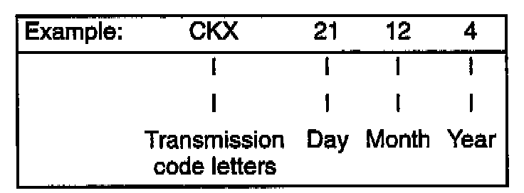
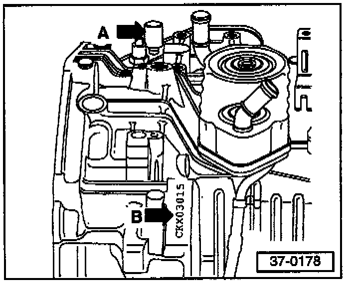

A/T - ATF Seeping From Final Drive Breather
Group: 39Number: 98-01
Date: Apr. 3, 1998
Subject:
Automatic Transmission Fluid (ATF) Seeping From Final Drive Breather Vent
Model(s):
All with 4 Speed Automatic Transmission (AG4)
Supersedes T.B. Group 39 number 97-01 dated Sept. 12, 1997
Superseded due to warranty Part Identifier and Labor Operation change.
Condition
ATF fluid seeping from final drive breather vent.
Production
^ Beginning August 26, 1996, transmission final drive units were filled with final drive oil Part No: G 052 145 S2
^ From December 21, 1994 to August 25, 1996 Automatic transmission final drive units were filled with VW (ATF).
On final drive units filled with ATF, (in some instances) ATF may seep out of the final drive breather vent (arrow -A-).
Service
If this condition exists:

Note:
Only transmissions within the build date range 21124 -> 25086 (see transmission identification below) are affected.

- Inspect transmission build date (arrow -13-).
If transmission is within build date and final drive is filled with ATF and fluid is seeping from final drive breather vent, perform the following:
- Remove final drive cover, drain ATF, reinstall cover (always use new gasket).
- Refill final drive with G 052 145 S2 final drive oil (see appropriate Repair Manual).
Note:
^ Do not intermix ATF and G 052 145 S2 oil!
^ If final drive fluid must be replaced, only use G 052 145 S2 011 (do not fill with ATF)!
^ If topping off final drive fluid on transmissions built prior to or after build dates listed, only use G O52 145 S2 oil.
^ You may top off final drive fluid with ATF, only if final drive is filled with ATF and no fluid is coming out of breather vent.
When procedure applies to vehicles within the New Vehicle Limited Warranty, use the following:
Part Identifier: 3921
Labor Operation: 3921510 255TU